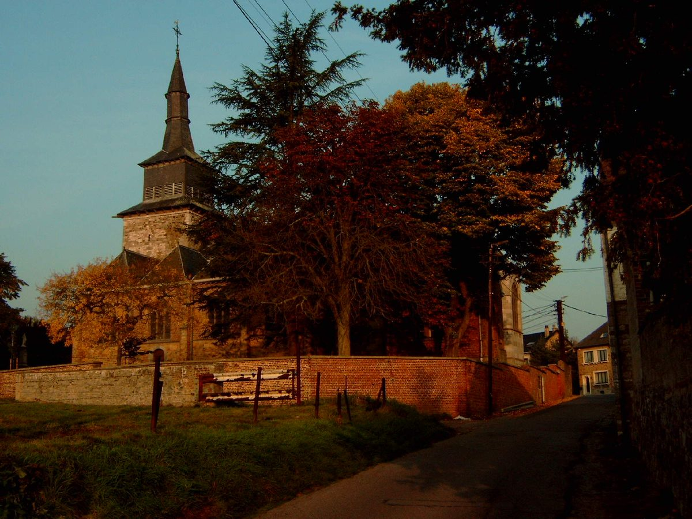

벨기에 탕플루 시민풍력협동조합 에올-리앵, 14년 만에 두 번째 풍력발전기…시민 판매 협동조합 거쳐 주민에게 공급

2012년 조합원 10명이 7주 만에 50만 유로 모아 첫 발전기…두 대로 마을 사용량의 두 배 녹색 전기, 날개는 부엉이 깃 본뜬 소음 저감형
벨기에 왈롱 지역 나뮈르시 탕플루(Temploux)의 시민 풍력협동조합 에올-리앵(Eole-Lien)이 첫 풍력발전기를 사들인 지 14년 만에 두 번째 발전기를 마련해 세우는 작업에 들어갔다. 길이 56m, 무게 약 17톤의 날개 3장이 밤사이 현장에 도착했고, 500m 떨어진 곳에서는 조합의 첫 발전기가 돌아가고 있다. 두 발전기가 함께 돌면 조합은 탕플루 마을 전체 사용량의 두 배에 해당하는 녹색 전기를 공급할 수 있게 된다. 조합은 2012년 조합원 10명으로 출발해 기대를 넘는 시민 출자로 7주 만에 50만 유로를 모아 첫 발전기를 샀으며, 공동 창립자 장 망제(Jean Mangé)는 "우리 전기를 우리가 만들고 싶었다"고 출발 동기를 밝혔다. 조합이 만든 전기는 여러 시민 발전협동조합의 전기를 사들여 주민에게 파는 판매 협동조합 코시테르(COCITER)를 거쳐 가정에 닿는데, 코시테르는 발전 조합만 있고 판매 고리가 비어 있던 문제를 메우려고 만들어졌으며 왈롱 지역에서 유일한 재생·시민 전력 공급자다. 파스칼 가틀리에(Pascal Gatelier) 에올-리앵 이사장은 새 발전기의 날개 끝을 부엉이 깃처럼 빗살 모양으로 다듬어 소음을 줄였다고 설명했다.
시민에너지 관점
조합원 10명이 7주 만에 50만 유로를 모은 작은 출발이 14년 뒤 마을 사용량의 두 배를 만드는 두 번째 발전기로 이어졌다는 것은, 시민 출자가 한 번의 모금이 아니라 해마다 쌓여 가는 지역 자산이라는 점을 보여 준다. 풍력은 시민이 감당하기에 너무 크고 소음 걱정도 크다는 반론이 나올 수 있지만, 주민이 주인인 조합은 소음 저감 설계 같은 선택을 스스로 하고 이익도 마을에 남기기 때문에 반대 대신 참여를 끌어낸다. 특히 발전 조합의 전기를 시민 판매 조합이 받아 주민에게 파는 구조는, 생산만 해서는 시민이 자기 전기를 직접 쓸 수 없다는 빈틈을 메운 것으로 보인다. 국내에서도 시민 발전소의 전기를 주민이 직접 사 쓸 수 있도록 시민 판매 사업자의 길부터 열어야 한다.
출처: RTBF Actus 2026-10-23 Armelle Delmelle 원문 보기
ベルギー・タンプルーの市民風力協同組合エオル・リアン、14年ぶりに2基目の風車…市民の電力小売協同組合を通じて住民に供給
2012年に組合員10人が7週間で50万ユーロを集めて1基目を購入…2基で村の使用量の2倍のグリーン電力、羽根はフクロウの羽を模した低騒音型
ベルギー・ワロン地域ナミュール市タンプルー（Temploux）の市民風力協同組合エオル・リアン（Eole-Lien）が、1基目の風力発電機を購入してから14年ぶりに2基目を手に入れ、建設作業に入った。長さ56m、重さ約17トンの羽根3枚が夜のうちに現場に到着し、500m離れた場所では組合の1基目が回っている。2基がそろえば、組合はタンプルー村全体の使用量の2倍に当たるグリーン電力を供給できるようになる。組合は2012年に組合員10人で発足し、期待を上回る市民出資で7週間に50万ユーロを集めて1基目を購入した。共同創設者のジャン・マンジェ（Jean Mangé）氏は「自分たちの電気を自分たちでつくりたかった」と出発点を語った。組合の電気は、複数の市民発電協同組合から電気を買い取って住民に販売する小売協同組合コシテール（COCITER）を通じて家庭に届く。コシテールは発電組合だけがあって小売の環が欠けていた問題を埋めるためにつくられ、ワロン地域で唯一の再生可能・市民電力の供給者だ。エオル・リアンのパスカル・ガトリエ（Pascal Gatelier）理事長は、新しい風車の羽根の先をフクロウの羽のようなくし状に加工し、騒音を抑えたと説明した。
市民エネルギーの視点
組合員10人が7週間で50万ユーロを集めた小さな出発が、14年後に村の使用量の2倍を生む2基目の風車につながったことは、市民出資が一度きりの募金ではなく年々積み上がる地域の資産であることを示している。風力は市民が担うには大きすぎ、騒音の心配も大きいという反論もありうるが、住民が持ち主の組合は低騒音設計のような選択を自ら行い、利益も村に残すため、反対ではなく参加を引き出す。とりわけ発電組合の電気を市民の小売組合が引き取って住民に売る仕組みは、発電だけでは市民が自分の電気を直接使えないという隙間を埋めたものとみられる。韓国でも、市民発電所の電気を住民が直接買って使えるよう、市民による電力小売事業者への道をまず開くべきだ。
出典: RTBF Actus 2026-10-23 Armelle Delmelle 原文を読む
比利时坦普卢市民风电合作社Eole-Lien时隔14年迎来第二台风机…经市民售电合作社供应给居民
2012年10名社员7周筹得50万欧元买下第一台风机…两台风机可提供相当于全村用电量两倍的绿电，叶片仿猫头鹰羽毛降噪
比利时瓦隆大区那慕尔市坦普卢（Temploux）的市民风电合作社Eole-Lien在购入第一台风机14年后，又购得第二台风机并开始安装。三片长56米、重约17吨的叶片已于夜间运抵现场，500米外，合作社的第一台风机正在运转。两台风机同时运行后，合作社可提供相当于坦普卢全村用电量两倍的绿色电力。合作社2012年由10名社员发起，靠超出预期的市民出资在7周内筹得50万欧元买下第一台风机，联合创始人Jean Mangé说：“我们想自己发自己的电。”合作社所发的电经由售电合作社COCITER送到居民家中。COCITER从多家市民发电合作社收购电力再卖给居民，它的成立正是为了补上“只有发电合作社、缺少售电环节”的空白，也是瓦隆大区唯一的可再生能源市民电力供应商。Eole-Lien理事长Pascal Gatelier介绍，新风机的叶片尖端仿照猫头鹰羽毛做成梳齿状，以降低噪音。
市民能源视角
10名社员7周筹得50万欧元的小起点，14年后发展为可提供全村两倍用电量的第二台风机，说明市民出资不是一次性的募款，而是逐年积累的地方资产。有人会说风电规模太大、市民难以承担，噪音也令人担心；但由居民当家的合作社会主动选择降噪设计，收益也留在村里，因此换来的是参与而不是反对。尤其是由市民售电合作社收购发电合作社的电力再卖给居民的结构，看来正好补上了“只发电、市民却用不上自己的电”这一缺口。韩国也应首先为市民售电企业打开通道，让居民能直接购买和使用市民电站的电力。
来源: RTBF Actus 2026-10-23 Armelle Delmelle 查看原文
Temploux citizen wind cooperative Eole-Lien raises its second turbine after 14 years, with a citizen supply cooperative selling the power to residents
Ten members raised 500,000 euros in seven weeks for the first turbine in 2012; two turbines will supply twice the village's demand, with owl-inspired low-noise blades
Eole-Lien, a citizen wind cooperative in Temploux in the city of Namur in Belgium's Wallonia region, has acquired its second wind turbine 14 years after buying its first and has begun putting it up. Three blades, each 56 metres long and weighing about 17 tonnes, arrived on site overnight, while the cooperative's first turbine keeps turning 500 metres away. With both machines running, the cooperative will be able to supply green electricity equal to twice the consumption of the whole village of Temploux. The cooperative started in 2012 with 10 members and bought its first turbine after citizen investment beyond expectations raised 500,000 euros in seven weeks; co-founder Jean Mangé said the founders "wanted to make our own electricity." Its power reaches homes through COCITER, a supply cooperative that buys electricity from several citizen generating cooperatives and sells it to residents; COCITER was set up to fill the missing supply link for co-ops that only generated power and is the only renewable, citizen-run electricity supplier in Wallonia. Eole-Lien chair Pascal Gatelier explained that the new blades have comb-like serrated tips modelled on owl feathers to cut noise.
Citizen Energy View
That a modest start, with 10 members raising 500,000 euros in seven weeks, has led 14 years later to a second turbine producing twice the village's needs shows that citizen investment is not a one-off fundraiser but a local asset that keeps growing. Some may argue that wind power is too big for citizens and too noisy, but a cooperative owned by residents makes choices such as low-noise blades itself and keeps the profits in the village, which draws people in rather than turning them against the project. Above all, the arrangement in which a citizen supply cooperative buys the generating co-op's power and sells it to residents appears to close the gap that leaves citizens unable to use the electricity they produce. Korea, too, should first open the way for citizen-run electricity retailers so that residents can buy and use power from citizen-owned plants directly.
Source: RTBF Actus 2026-10-23 Armelle Delmelle Read the original